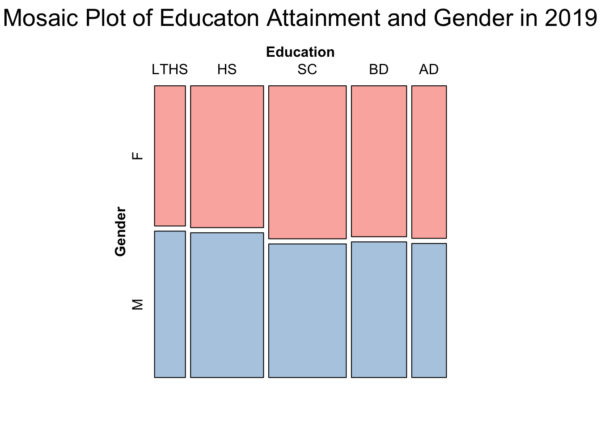
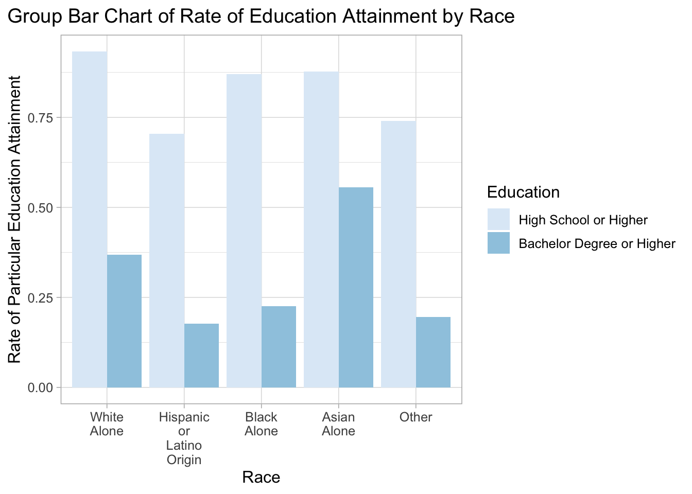

Chapter 5 Results
In this section, we look at data on the different levels of education attainment by gender, race, states and the possible influence of educational attainment on median earnings of the population and women’s marriage and fertility status in 2019 in the United States.
5.1 Education Attainment and Gender in 2019
We first focus on the level of educational attainment and how it differed by gender in 2019. We plot a mosaic plot to show the relation between these two variables. Notice that since the variable Education has five levels and long names, it is hard to display them appropriately and clearly in the label of mosaic plot. Therefore, we abbreviate the variable names by converting “Less than High School” to “<HS”, “High School Graduate” to “HSG”, “Some College or Associate Degree” to “SC”, “Bachelor Degree” to “BD”,“Advanced Degree” to “AD”.

From the mosaic plot, we can first observe that over the United States, people have high school graduate degree and some college or associate degree occupy the two largest proportions of the whole population and people who do not go to high school or obtain advanced degrees (graduate or professional degrees), occupy the two smallest proportions. Moreover, let us explore more about the relationship between gender and education. We can observe that more females generally obtain a higher level of education than males since in the group of less than higher school and high school, female occupy a smaller proportion than male, while in the group of some college or associate degree, bachelor’s degree, or advanced degree, female occupy a larger proportion than male. However, if we look at the whole population, approximately more than 85% of the population have graduated from high school, which is relatively high.
5.2 Different Levels of Education Attainment by Race
Now, let us look at the different levels of education attainment by race in the United States. Unlike the previous plot, in this plot, educational attainment levels are “Higher School or Higher” and “Bachelor Degree or Higher”, which represent people with a high school graduate or higher degree and people with a bachelor or higher degree, respectively.

From the above group bar chart, we can observe that White people, who occupy the largest population in the United States, have the highest percentage of people with a high school diploma or higher degree than other races, followed by Asian Americans and Black people. Hispanic or Latino people have the lowest percentage of people with higher educational attainment than other races.
Moreover, if we look at the Asian American group, we can notice that in general, Asian Americans have high education attainment with both a relatively high rate of high school graduate or higher and the highest rate of bachelor degree or higher among all races.
5.3 Different Levels of Education Attainment by Race and Gender Together
In this section, we look at how educational attainment levels vary by gender for each race by plotting a horizontal stacked bar chart faceted by 2 educational levels, namely higher school graduate or higher and bachelor’s degree or higher.

One interesting finding from the above horizontal stacked bar chart is that more than 50% of the population who obtain a high school diploma or higher or a bachelor’s degree or higher are females. This unbalanced proportion of educational attainment within gender becomes even more apparent when we focus only on the plot of Bachelor Degree or Higher or only focus on black people. In general, the proportion of females among all population who obtain a high school or higher degree is larger than the proportion of males, and this difference becomes larger when it goes to the group of people with a bachelor’s degree or higher.
Moreover, among all races, the contrast in the percentages of black females and black males among all black people who obtain higher educational attainments are the largest. Besides, the two proportional breakdowns of gender remain almost unchanged for white people and Asian Americans with a high school diploma or higher and with a bachelor’s degree or higher.
5.4 Median Earning for each Level of Education Attainment and Gender
After exploring the proportional breakdown of education attainment by gender and race, we now focus on the possible influences of different educational attainment levels. In this section, we use bar chart faceted by gender to show how the median earning differs in population with different education attainments and how these differences appear in genders.

We can observe from the plot that people’s earnings increase as they obtain higher degrees of education. Moreover, we can find that for all genders and the total population, median earnings for people who obtain bachelor’s degrees or higher are higher than the overall median earning for all populations. If we explore more on the bars’ lengths, we can observe a considerable increase in earnings for people obtaining bachelor’s degrees compared to those attending some colleges. The earnings for people with advanced degrees increase even more. This finding reveals the positive influence of higher education on people’s earnings and the high return rate of higher education investment regarding future earning.
If we look closer to genders, females’ median earnings are lower than males and the total population regardless of educational attainment levels. Males with advanced degrees, namely graduate or professional degree, have the highest median earnings, and females with education attainment that is less than high school earn at least among all groups.
5.5 Education Attainment and Women’s Marital and Fertility Status
In the last section, we notice that though high education attainment increases people’s earnings, the earnings among males and females are unequal for all education attainment levels. To explore the influence of educational attainment on women’s lives, we use a new data set with information on marital status for women who give birth or not in 2019 in different education levels. Then, we plot a horizontal stacked bar chart to visualize women’s distribution with different marriage statuses, fertility statuses, and education levels.

Women who finish high school or obtain some college degrees take up the largest proportion of the whole women population, so they still occupy the largest proportion of women who give birth or not. Moreover, the proportional breakdown of education attainment for women giving birth or not in 2019 remained unchanged for married women. However, the percentage of females that obtain some college degrees or higher is larger for unmarried women who do not give births than the one for females who give birth in 2019.
One interesting finding is that for women who give birth to babies in 2019, the proportional breakdown of education attainment was different with various marital statuses. More than 50% of unmarried women who gave birth to babies in 2019 had a high school graduate degree or lower. However, approximately 75% of married women who gave birth to babies in 2019 had some college degrees or higher. From this, we can observe that educational attainment might be a factor of unmarried birth.
5.6 Education Attainment and Median Earning by States
In this section, we conduct a linked micromap to see how education attainment and median earning differ in states in the United States in 2019 and explore the potential relationship among educational attainment, median earning, and states. To visualize the data, we plot a linked micromap, including a Cleveland dot plot for bachelor’s degree or higher rate for each state, a Cleveland dot plot for the median earning for the total population in each state, and a map indicating the state corresponding the dot in the Cleveland dot plot. Notice that both Cleveland dot plots are sorted by the rate of bachelor’s degree or higher for each state. Even though Washington D.C. is not a state in the United States, it is an essential factor to be considered. Therefore, we put it in the plot as well.

## [1] "micromapST Ends"From the plot, it is clear to notice that Washington DC has the highest bachelor’s degree or higher education attainment rate and also the highest median earnings. It is reasonable because it is the United States’ capital city with fewer population compared to other states. Therefore, we regard it as an outlier. Looking at the micromap on the left side of the plot, we can see that the states with better higher education attainment rates than the medium are generally locally on the East and West coast and the Northern part of the United States. The states with relatively low higher education rates are mostly located in the Central and Southern parts of the country.
There is no significant positive linear relationship between higher education attainment rate and median earning for each state in the plot. It is reasonable because the medium earning of a state is affected by multiple factors, including policy, geographic location, resources, etc. However, we can still observe a slight trend of a higher median earning with a higher population rate with bachelor degrees or higher for states.
There are two states, Alaska and Montana, which require further research.
Alaska has a relatively low rate of population with bachelor’s degrees or higher compared to the medium. However, it has a higher median earning, close to $50,000, compared to states with similar or even greater higher education attainment rates. The contrast might be due to Alaska’s rich mineral resources, developed tourism, and relatively small population.
In contrast, Montana has a great higher education attainment rates but low median earning, less than $40,000. Its median earning is lower than the ones for most other states. The reduction of natural resources, closure of miners, and late technology adoption are some possible reasons lying behind it.